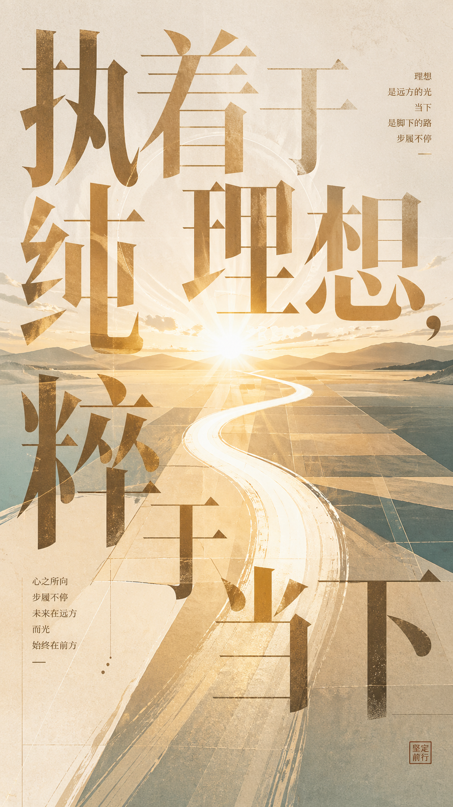
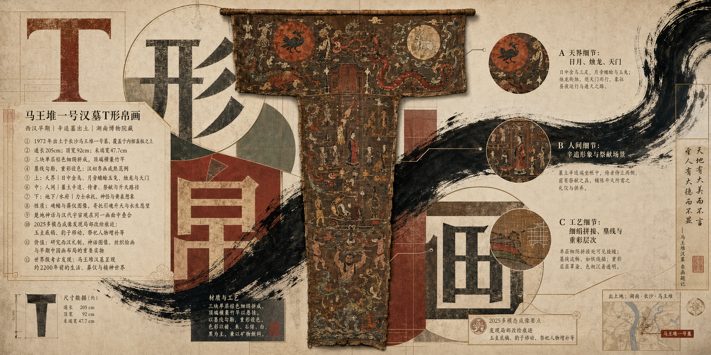
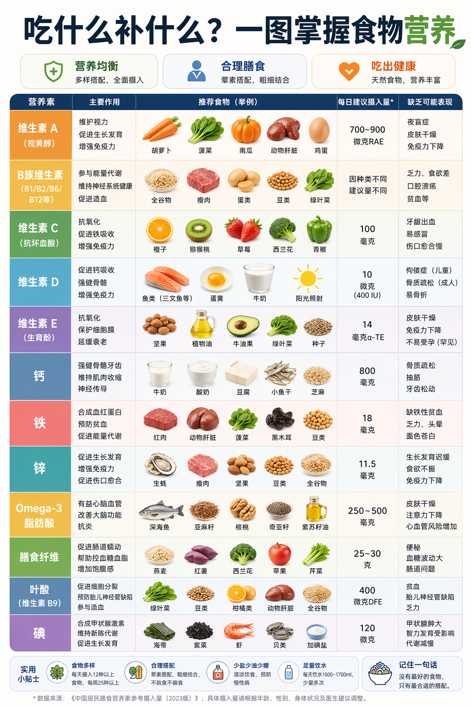
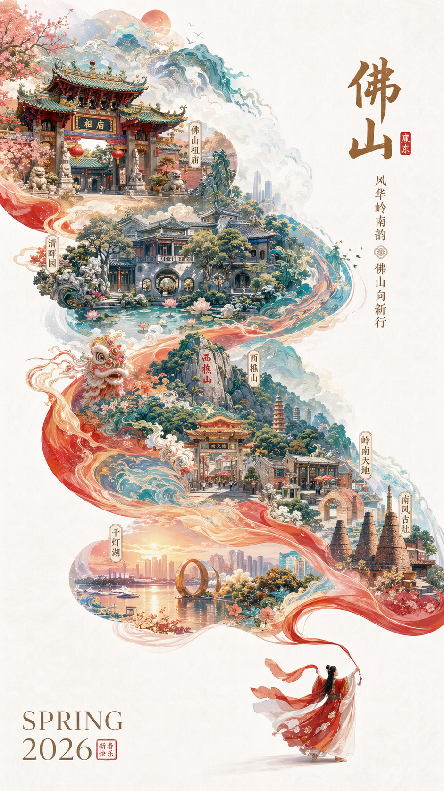
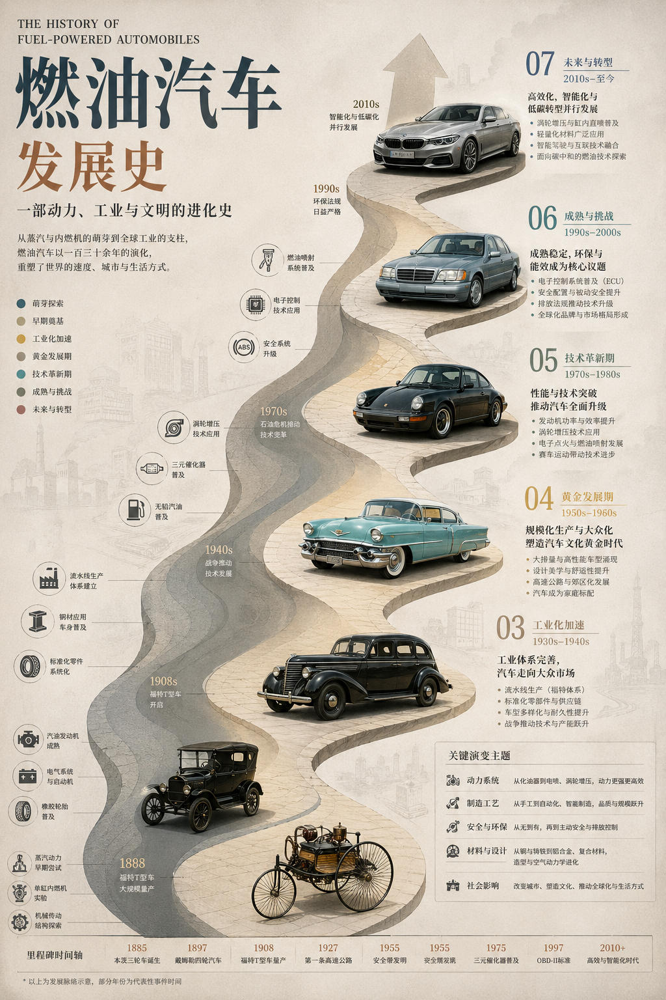
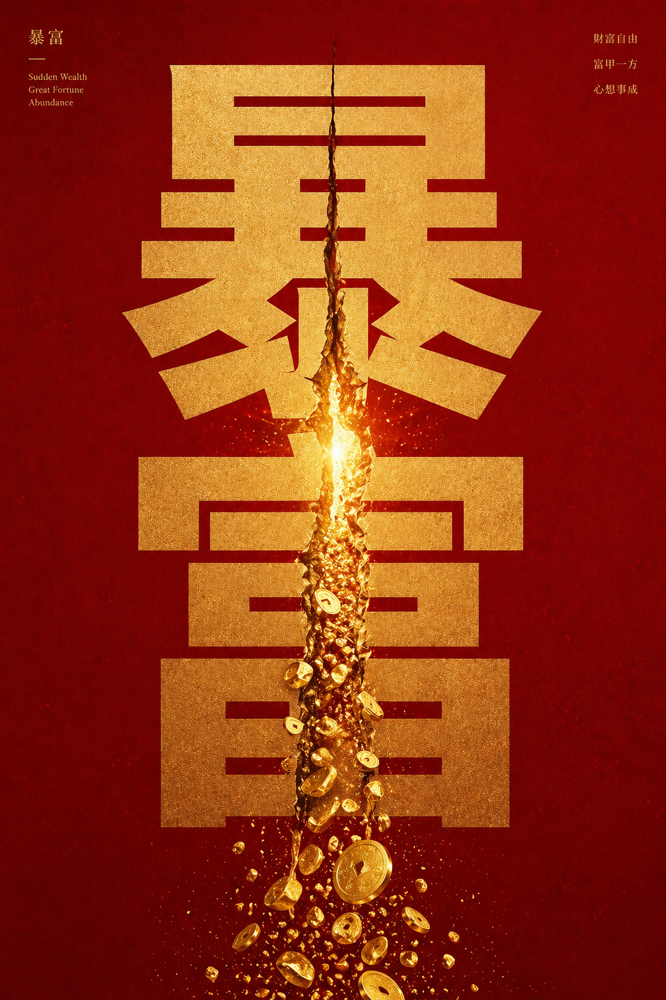

SEMANTIC CONCEPT POSTER语义转译概念海报
能把抽象语义转译成图文共生的概念海报，兼顾中文大字、人物叙事和情绪隐喻。
以下卡片用视觉案例解释 gpt-image-2 的重点能力：文本生图、复杂排版、图像输入、编辑迭代、输出控制与安全生成。

SEMANTIC CONCEPT POSTER能把抽象语义转译成图文共生的概念海报，兼顾中文大字、人物叙事和情绪隐喻。

MUSEUM KNOWLEDGE POSTER能组织神话图像、文物主体与考古信息，适合生成高密度文物研究图谱。

GENERATED IMAGE能把密集健康知识整理成清晰表格，兼顾图标、食材示例和中文可读性。

GENERATED IMAGE能把城市地标、节庆气氛和路线动线融合成一张具有东方审美的旅行海报。

GENERATED IMAGE能把时间线、车型演进和技术节点组织成信息丰富的历史视觉图谱。

SEMANTIC CONCEPT POSTER能把单个中文词转译成强烈视觉隐喻，用字形裂缝、金币喷涌和红金配色制造记忆点。
根据 OpenAI API 文档整理，gpt-image-2 的图像能力不只是“文生图”，还包括编辑、对话式迭代、输出控制和安全治理。
通过 Image API 从提示词生成图片，适合单次海报、产品图、概念视觉和素材生成。
基于现有图片进行局部或整体修改，并可利用图像输入保留更高保真细节。
Responses API 可把图像生成纳入对话流程，支持连续 refinement 和上下文创作。
支持尺寸、质量、格式等输出控制；生成链路包含提示词、输入图和输出结果的安全检查。